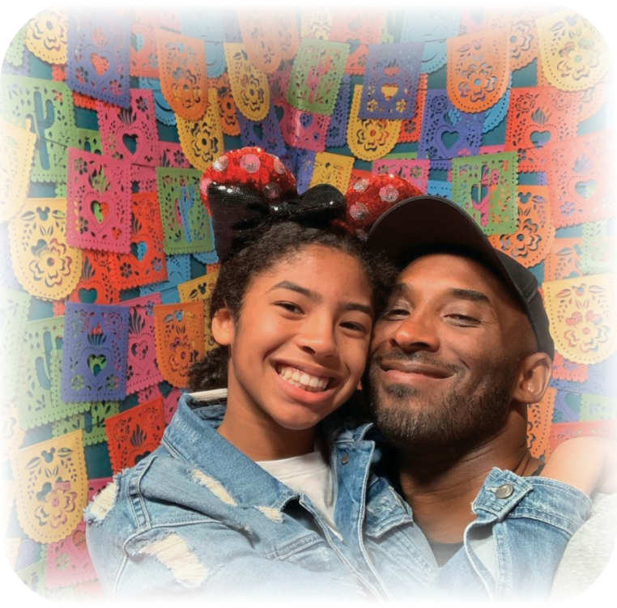

Kobe Bryant shared an incredibly close and affectionate relationship with his daughter Gianna, affectionately known as Gigi. Their bond was particularly strong around their mutual passion for basketball. Kobe served as both Gianna’s father and her mentor, coaching her with a focus that reflected his love and commitment. Gianna, in turn, embraced the sport with a fervor reminiscent of her father, showcasing a competitive spirit and a burgeoning talent that hinted at a bright future in women’s basketball. Together, they exemplified a deep, familial connection built on shared dreams and mutual respect for each other’s aspirations in the sport they loved.
